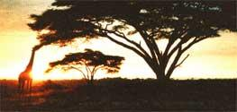
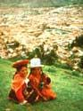
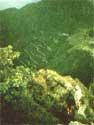
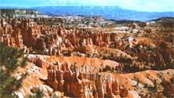

Hang on to your hats, folks, Mother Earth News' Tour Program is bristlin' with good news! First, the Health and Nutrition Tour to the U.S.S.R. next May 27 through June 16 (see Mother Earth News, No.s 53 and 54) sponsored by this magazine and the Citizen Exchange Corps has already overflowed the limits we had originally set. However, if you still want to discover the secrets of the Caucasus' marvelous centenarians, we have made arrangements to open up the tour to a larger group. But those of you who want to come along will have to get your $50 deposits in the mail right away!
And, because the response to the first tour was so darn inspirational, we got together with a fine group of people, Nature Expeditions International (NEI), and came up with three more fabulous trips designed to increase our understanding (and appreciation) of this grand old spaceship Earth. In fact, these tours are such exciting learning experiences that you can get college credit for any of Mother Earth News' foreign expeditions, including the trip to the U.S.S.R!
Here's a brief outline of just some of the things our new trips will include:
THE ANDES AND THE AMAZON: From July 5 through July 27, 1979 Mother Earth News' Tours, in cooperation with NEI, will study the peoples and cultures (past and present) of the Andes and the Upper Amazon.
Our trip will begin in the former capital of the Inca Empire - Quito, Ecuador - which is chock-full of intriguing museums, markets, plazas, charming narrow streets and colonial architecture.
From there we'll journey to Cuenca in the southern Andes, a center of rug weaving, panama hats and woodworking. While in the Andes we'll also take excursions to Ingapirca (the main Inca ruin in Ecuador) and to the Otavalo/Ibarra regions, which are well-known for their Indian rugs, baskets, leather goods, shawls, embroidery and handwoven tweeds.
In Pizarro's "City of the Kings" - Lima, Peru - the many rich museums will prepare us for our next sensational stops on the trip. Because, once we leave Lima, a spectacular flight over the Andes will take us to Cuzco, the oldest inhabited city in the Western Hemisphere, where we'll investigate Tombomachay (the ritual baths of the Incas), the Kenko Ruins and the colossal pre-Inca fortress of Sacsayhuman, mysteriously fashioned of polished stone blocks which weigh up to 300 tons each.
And, from Cuzco, we'll take a scenic train ride to the incredible "lost city" of Machu Picchu, where we'll have ample time (two days) for onsite lectures, personal exploration and hikes up Huayna Picchu (''New Peak") and Machu Picchu (''Old Peak").
Then comes a real change of pace! In Puerto Maldonado, we will take to boats and dugout canoes and spend several days exploring one of the few unspoiled areas of the Upper Amazon.
Our last stop will be the exquisite colonial city of Arequipa, Peru with its wonderful Santa Catalina convents, cathedral and plaza.
The expedition fee is $1,490 plus airfare and covers everything except for meals in Lima, visas and passports and foreign airport departure taxes. Here are some examples of air costs to figure on: If you live in Miami, the tab (including round trip out and back, plus intratour air travel) is $481; New York, $592; Los Angeles, $607. Our limit is 20 people, and a deposit of $200 will reserve a place for you!
A KENYA ECOLOGY SAFARI: If the Amazon isn't your "cup of tea", you can, on August 3, 1979, join us for a 24-day tenting safari in Kenya, with an optional one-week excursion to Mombasa and the African coast.
We'll begin the trip with a day and night in London, before our flight to Nairobi. Between lectures at the University of Nairobi, which cover the geology, ecology and peoples of East Africa, tour members will be able to shop, sightsee, and watch traditional Bomas dances.
While this trip does emphasize "off-the-beaten-track" experiences, it won't be all that physically demanding, and just look at some of the fascinating places that the expedition will be covering:
The Samburu Reserve is the favorite haunt of "northern animals" like Beisa oryx, gerenuk, grevy's zebra and reticulated giraffe, as well as such birds as Somali ostrich, hornbills, goshawks and falcons. Time permitting, there'll also be an excursion to Wamba to visit a Samburu tribe encampment.
At Mt. Kenya, our day's hike will begin in cedar and podocarpus forests, and wind through bamboo and hagenia trees that hide buffalo, elephant and blue monkey. Up on the wet moorlands, we'll walk among giant heather and everlasting flowers until they give way to lobelias, giant scenecios and the incredible alpine scenery of Mt. Kenya. Tour members will spend that night at the elegant Mountain Lodge, for an evening of nocturnal game viewing.
Set beneath the distant dome of Mt. Kilimanjaro, Amboseli is Kenya's most photogenic wildlife preserve. The game is diverse, plentiful and easy to spot. (Amboseli is noted for its cheetah, buffalo, giraffe, zebra, gazelle and more than 400 species of birds.)
One of the largest "animal kingdoms" in Africa, Tsavo Park, is chiefly famous for its enormous herds of elephants, as well as fringe-eared oryx, lesser kudu, a local variety of gazelle and the rock-loving Klipspringer antelope. (And how would you like to spot a brilliant golden-breasted starling in a baobab tree?)
For the next few days, we'll explore the lakes of the Rift Valley, including one of the avian wonders of the world - Lake Nakuru -which resembles a vast sea of pink and blue as one million or more flamingos feed on blue-green algae. Other activities will include hikes in Hell's Gate Gorge, early morning observation of bird life (especially ibis) from small boats on Lake Naivasha, and visits to some sites once frequented by prehistoric man.
Our next stop will be Lake Victoria, the second largest lake in the world, which hosts hippos and crocodiles, while the nearby Kakamega rain forest is a bird and butterfly delight!
By the time we arrive in Masai Mara (on the northern edge of the Serengeti), we'll find that the annual migration has concentrated tens of thousands of wildebeests (plus zebras and antelopes) in the area. These are followed by predators such as lions and cheetahs, which make this migration the greatest wildlife spectacle in Africa. (Because the Mara is so vast, open and rich in game, we'll observe many of these animals from land cruisers.)
The cost of this unforgettable safari is $1,590, plus airfare. (Sample complete air costs: from New York, $951; Chicago, $1,072; San Francisco, $1,126.) Again, the price is all inclusive except for meals in London and Nairobi, visas, etc. And, again, the limit is 20 and the deposit, $200.
For an additional $390 (which will require an extra $100 deposit) you can take a week's extension to the coast, and, while we're this close, why not?
This optional excursion will take us to Mombasa, a meltingpot city of Arabs, Indians and Bantu, where (among other things) we'll explore a 15th-century Portuguese fort.
From there, we'll go swimming and snorkeling in beautiful Watumu Bay on the exotic, colorful Indian Ocean. Other activities will include backwater boat excursions and nature walks.
Then, to top it all off, we'll visit Lamu Island, a living Swahili museum that dates back to the days of Sinbad the Sailor and, possibly, to the first century. Although there's much to do here (such as sailing to nearby islands) the unique inhabitants alone are worth the trip. Then it's back to Nairobi and home.
CANYONLANDS NATURE PHOTOGRAPHY: Speaking of home, another safari-type adventure awaits you on September 21, 1979. That's when Mother Earth News and NEI present a 10-day, nature photography expedition to the spectacular, kaleidoscopic canyon country of the American Southwest.
We'll leisurely explore and photograph Zion and Bryce Canyon National Parks and Cedar Breaks and Capitol Reef National Monuments under the guidance of an outstanding, nationally known nature photographer. There'll be plenty of time for hikes, personal discussions, question-and-answer sessions and photo critiques. While designed for the serious student of photography, this tour is a "natural" for novices who enjoy camping and living out-of-doors, too.
We'll meet in Cedar City, Utah and travel to the canyonlands in airconditioned maxiwagons. Our camps will feature large umbrella tents (double occupancy) with comfortable cot beds, camp chairs and other amenities, where we can relax while the camp cook prepares our excellent meals.
Such a safari-type format enables us to take full advantage of the photographic and instructional opportunities offered by the everchanging light on these multicolored, magnificent spires, cliffs, natural bridges and domes.
The fee for this outdoor photography class is $790 from Cedar City, and it, too, is all-inclusive except for meals in town, photographic equipment, sleeping bags, etc. Still, in order to provide individual instruction, our maximum is 20 people, but a $100 deposit will guarantee you a spot.
There, now, could you ask for a better group of trips? And if the U. S. S. R. tour is any indication, they're going to fill up fast!
According to our agreement with NEI, the initial deposit for any expedition is refundable up to 60 days before departure, less a $50 handling charge. Any cancellations after 60 days will result in additional charges based on non-recoverable deposits and expenses.
|
 The Masai Mara, located on the northern edge of the Serengeti, is the greatest wildlife spectacular in Africa, with its vast, open area, so rich in game. |
 Indian girls in Cuzco, Peru, the oldest inhabited city in all the Western Hemisphere. |
 Machu Picchu, the incredible "lost city" in the Andes. |
|
At the market in Africa. |
 Colorful Bryce Canyon of the American Southwest is waiting to be explored. |
|